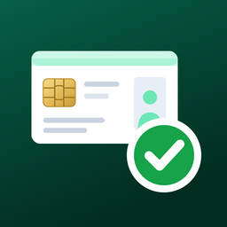

Thai ID Reader
Privacy Policy · นโยบายความเป็นส่วนตัว
English
Effective date: 28 October 2026
Thai ID Reader ("the app") is developed by Seri Niyamangkoon ("I", "me"). This policy explains what happens to information when you use the app.
1. What the app reads
When you insert a Thai national ID card into a smart card reader and tap Read card, the app reads the following from the card's chip:
- Citizen ID number
- Name in Thai and English
- Date of birth and gender
- Address
- Card issuer, issue date and expiry date
- Face photo (only if Include photo is turned on)
The app reads the card only when you tap Read card. It does not read cards in the background.
2. How the data is used
The data is used only to show the card details on your screen and to check whether the card has expired and whether the ID number is valid. That is all.
3. Where the data is stored
- On screen only by default. When you tap Clear screen or close the app, the data is gone.
- Saved on this iPad, only if you tap Save on this iPad. One card is kept in the app's private storage. It is encrypted by iPadOS and cannot be read while your iPad is locked (this requires a passcode on your iPad).
- Saved data is excluded from iCloud and computer backups, so it does not leave your iPad.
- You can remove it at any time with Delete saved data. Deleting the app also deletes it.
4. Sharing
The app does not connect to the internet. I do not receive, sell, share or transfer any card data. No third-party software development kits (SDKs), analytics or advertising tools are included in the app.
5. Crash reports from Apple
If you have chosen in your iPad's settings to share analytics with app developers, Apple may send me anonymous crash reports. These are handled under Apple's privacy policy and do not include the card data shown in the app.
6. Demo mode
Demo mode shows made-up sample cards. It does not use real personal data and its sample data cannot be saved.
7. Reading other people's cards
If you use the app to read cards belonging to other people, for example customers, you decide why and how their data is used. Under Thailand's Personal Data Protection Act B.E. 2562 (PDPA) you may be the data controller for that data and responsible for informing those people and getting their consent where required. Only read a card with the card holder's knowledge.
8. Children
The app is not directed at children and does not knowingly collect information from anyone, including children.
9. Your rights
Because I hold no data about you, there is nothing for me to access, correct or delete. All data the app stores is under your control on your own iPad.
10. Changes to this policy
If the app's handling of data changes, I will update this page and the effective date above before the change is released.
11. Contact
Questions about this policy: seri@niyamangkoon.com
ภาษาไทย
มีผลบังคับใช้: 28 ตุลาคม 2569
แอป Thai ID Reader ("แอป") พัฒนาโดย เสรี นิยมมงคล ("ผู้พัฒนา") นโยบายนี้อธิบายว่าเกิดอะไรขึ้นกับข้อมูลเมื่อคุณใช้แอป
1. ข้อมูลที่แอปอ่าน
เมื่อคุณเสียบบัตรประจำตัวประชาชนเข้ากับเครื่องอ่านบัตรและแตะ Read card แอปจะอ่านข้อมูลต่อไปนี้จากชิปของบัตร:
- เลขประจำตัวประชาชน
- ชื่อ-นามสกุล ภาษาไทยและภาษาอังกฤษ
- วันเกิดและเพศ
- ที่อยู่
- หน่วยงานที่ออกบัตร วันออกบัตร และวันบัตรหมดอายุ
- รูปถ่ายใบหน้า (เฉพาะเมื่อเปิด Include photo)
แอปจะอ่านบัตรเฉพาะเมื่อคุณแตะ Read card เท่านั้น และไม่อ่านบัตรเบื้องหลัง
2. การใช้ข้อมูล
ข้อมูลถูกใช้เพื่อแสดงรายละเอียดบัตรบนหน้าจอ และตรวจสอบว่าบัตรหมดอายุหรือไม่ และเลขประจำตัวประชาชนถูกต้องหรือไม่ เท่านั้น
3. การจัดเก็บข้อมูล
- โดยปกติข้อมูลจะแสดงบนหน้าจอเท่านั้น เมื่อแตะ Clear screen หรือปิดแอป ข้อมูลจะหายไป
- บันทึกบน iPad เครื่องนี้ เฉพาะเมื่อคุณแตะ Save on this iPad แอปจะเก็บข้อมูลบัตรหนึ่งใบไว้ในพื้นที่ส่วนตัวของแอป ซึ่งเข้ารหัสโดย iPadOS และไม่สามารถอ่านได้ขณะ iPad ล็อกอยู่ (iPad ต้องตั้งรหัสผ่าน)
- ข้อมูลที่บันทึกไม่ถูกรวมในการสำรองข้อมูล iCloud หรือคอมพิวเตอร์ จึงไม่ออกจาก iPad ของคุณ
- คุณลบข้อมูลได้ทุกเมื่อด้วย Delete saved data และข้อมูลจะถูกลบเมื่อคุณลบแอป
4. การเปิดเผยข้อมูล
แอปไม่เชื่อมต่ออินเทอร์เน็ต ผู้พัฒนาไม่ได้รับ ไม่ขาย ไม่เปิดเผย และไม่โอนข้อมูลบัตรใด ๆ แอปไม่มีชุดพัฒนาซอฟต์แวร์ (SDK) ของบุคคลภายนอก ระบบวิเคราะห์ หรือระบบโฆษณา
5. รายงานข้อขัดข้องจาก Apple
หากคุณเลือกแชร์ข้อมูลวิเคราะห์กับนักพัฒนาแอปในการตั้งค่า iPad ทาง Apple อาจส่งรายงานข้อขัดข้อง (crash report) แบบไม่ระบุตัวตนให้ผู้พัฒนา ซึ่งอยู่ภายใต้นโยบายความเป็นส่วนตัวของ Apple และไม่มีข้อมูลบัตรที่แสดงในแอป
6. โหมดสาธิต
โหมดสาธิต (Demo mode) แสดงบัตรตัวอย่างที่สร้างขึ้น ไม่ใช้ข้อมูลส่วนบุคคลจริง และไม่สามารถบันทึกได้
7. การอ่านบัตรของบุคคลอื่น
หากคุณใช้แอปอ่านบัตรของบุคคลอื่น เช่น ลูกค้า คุณเป็นผู้กำหนดวัตถุประสงค์และวิธีการใช้ข้อมูลนั้น ตามพระราชบัญญัติคุ้มครองข้อมูลส่วนบุคคล พ.ศ. 2562 (PDPA) คุณอาจเป็นผู้ควบคุมข้อมูลส่วนบุคคล และมีหน้าที่แจ้งวัตถุประสงค์และขอความยินยอมจากเจ้าของข้อมูลตามที่กฎหมายกำหนด โปรดอ่านบัตรโดยที่เจ้าของบัตรรับทราบเท่านั้น
8. เด็ก
แอปไม่ได้มุ่งเป้าไปที่เด็ก และไม่เก็บข้อมูลจากบุคคลใด รวมถึงเด็ก
9. สิทธิของคุณ
เนื่องจากผู้พัฒนาไม่ได้เก็บข้อมูลของคุณ จึงไม่มีข้อมูลให้เข้าถึง แก้ไข หรือลบที่ฝั่งผู้พัฒนา ข้อมูลทั้งหมดที่แอปเก็บอยู่ภายใต้การควบคุมของคุณบน iPad ของคุณเอง
10. การเปลี่ยนแปลงนโยบาย
หากวิธีจัดการข้อมูลของแอปเปลี่ยนไป ผู้พัฒนาจะปรับปรุงหน้านี้และวันที่มีผลบังคับใช้ก่อนเผยแพร่การเปลี่ยนแปลง
11. ติดต่อ
สอบถามเกี่ยวกับนโยบายนี้: seri@niyamangkoon.com